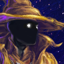

Disruptis - Disruptis
06-Jan-21 11:03 PM
{kind=link}
[AR 1/5/1 9:35PM] CLOSED RP - Fortuna, Venus
~The soft purple and blue glows of neon lights lit up a myriad of bodies and mechanisms travelling through the underground settlement of Fortuna. The fading chill of the cold shift lingered on everyone’s limbs as they came from the outside. They shuffled along with their tasks, letting out deep breaths as they feel the short period of warm weather about to grace their weary souls. The iconic clang of hammers, the spinning of gyros, and the disgruntled humming of electronics filled the air with their noise. It was a busy time.
Amidst all this hustle and bustle, a figure deftly darted through the alleys and walkways, moving towards a certain secluded room in the back of Fortuna.~
Askaris - Narakis
07-Jan-21 05:30 PM
The passage of the visitor went unnoticed to most Solaris hurrying through the alleyways of their subterranean home. A few may have briefly seen the faint glint of gold and a pair of glowing orbs watching from a shadowy corner, but as soon as one took notice they winked out; easily dismissed as a hallucination brought on by faulty optics or mainlining stims for too long.
The truth was, as is oft the case, far stranger.
To the figure the sights and sounds of the back-alleys were muted, distant, echoes from realspace to the parallel emptiness she stalked through. Many Tenno could dip briefly into the Void-shadow of reality, but to drink deep of its waters and descend beneath its surface for a lengthy sojourn required one to follow a particular path; the path of Zenurik. For her it was a path well trod, and well worth the effort to traverse when discretion was key.
She slowed as she approached an intersection of walkways, sidling up to the railing and peering over the edge. Nestled between a block of apartments and the rocky cavern wall was a maintenance access door, poorly lit and easily forgotten; a perfect place for those who want to conduct their business unobserved. In one practiced movement she vaulted over the guardrail, willing herself to a gradual stop before touching the ground. She took a deep shuddering breath, letting real air fill her rapidly re-materialising lungs as she breached the skein between dimensions. Where there was once no-one stood a tall, willowy young woman, wrapped in dark finery that contrasted sharply with her silver hair. Between her pale blue-tinged pallor, blank ocular implants and golden cybernetic pins, she looked like could have walked straight out of the history books along with the rest of the Vallis' resurrected fauna.
Taking a moment to compose herself (and surreptitiously check the load on the ornate revolver at her hip), she strode toward the door, rapping out a short musical sequence with a gloved fist.
Disruptis - Disruptis
07-Jan-21 06:06 PM
~Nothing happened for a couple seconds. Then the door hissed open, revealing a muscular Vox Solaris worker wiedling a rifle disguised as a tool-gun. His mechanical gear shone with a certain polish that dimly reflected the colourful lights. He took a look past Narakis, then leaned against the door to make way for her to pass.~
Askaris - Narakis
07-Jan-21 06:09 PM
"My thanks."
With a polite incline of her head toward the guard she headed inside, the metallic heels of her boots rhythmically clinking on the deck plating.

UnremarkableUsername - Karsk
07-Jan-21 07:35 PM
The room was dimly lit. Pipes snaked and intertwined across the walls and through the middle of the room, pointing their valves into what little walkable space there was. For anyone larger than a ventkid, this extend about two meters to the right and three forward from the door.
As Narakis stepped forward into the room, something crunched under her foot. A stim cartridge. The sound of the contents of the pipes heading off to wherever they were going filled the air, softly, unobtrusively, yet completely. ...hhsssshhhhh...
In the far corner of the room was a neatly-stacked pile of rusty, dented boxes. From it, a voice issued, a grating monotone through speakers that belonged in the scrap-heap, singing softly.
"...It's a beautiful day...Don't let it get away..."
(edited)
Askaris - Narakis
07-Jan-21 09:02 PM
Nudging the shattered remains of the cartridge to one side, Narakis sauntered in. She stroked her chin as she took in the dingy surroundings, a smile creeping over her face as she eyed the singing scrapheap.
"Do I have the pleasure of addressing one Cephalon Karsk?"
(edited)
UnremarkableUsername - Karsk
07-Jan-21 09:44 PM
"You do."
The stack of scrap was silent for a moment, then it began to unfold, narrowly missing the protruding valves. It was a Moa, of the sort usually deployed on the Orb Vallis, but this one was scratched and dented, obviously having gone far too long without the touch of a Corpus technician.
The moa made no sound as it stood up, no creak of un-lubricated joints, no hiss of leaky pneumatics, no drip of leaky hydraulics, no hum of electric motors. Despite the poor condition of its armor, its inner workings were in good repair.
"I suppose you are Narakis Agni."
He parsed the name.
"Hellborn firegod. Hkh. How much have they told you, little sister?"
(edited)
Askaris - Narakis
08-Jan-21 01:03 PM
She beamed at the moa; if she was at all put off by his apparent state of disrepair, she was doing a fine job of hiding it. "They told me that you and I shall be going on a journey together, with yours truly as your faithful bodyguard. The honour of detailing our itinerary, however, was left to you."
Her eyes slid away from Karsk, pursing her lips and gazing up at the nest of pipes above them, tapping her chin as if in deep thought. "Of course, if I were to speculate, the fact that I was the one offered the job implies a requirement for certain skills and assets on this little excursion. To whit-"
She held up a finger. "-One: a vessel quiet and fast enough to bypass conventional blockades and interdiction fleets. An Orokin-era Tenno orbiter, for example."
Her eyes flicked back toward the cephalon as a second finger rose. "And two: a guardian for whom the worst this blighted system can offer holds no fear."
She raised an eyebrow. "Who knew that archaeolinguistics was such a fraught field?"
UnremarkableUsername - Karsk
08-Jan-21 02:51 PM
"Every field is, if you have personal experience in it."
The moa paused for a moment.
"Here is what they did not tell you, then. Anyocorp shipped something to Uranus. We know where, but we do not know what, or why. And that, of course, is the question we are tasked with answering."
Askaris - Narakis
08-Jan-21 05:17 PM
Narakis seemed to consider this for some moments, before nodding emphatically. "Intriguing. Most intriguing! Almost as as much as it is hazardous, I'd wager."
Her hand returned once more to her chin, propping it up on her palm. "Now, what do we know of the 'where'? A submerged Grineer facility, I presume?"
UnremarkableUsername - Karsk
08-Jan-21 09:32 PM
"Yes. I can give a more detailed description, but doing so out loud would be ill-advised, and also an unnecessary annoyance."
The moa extended a foot forward, ready to take a step.
"We can speak more freely aboard your ship, and if you allow me to interface with the shipboard systems, I can load the navigational data diectly. Also I am hungry -- uh. My moa needs to be charged."
Askaris - Narakis
09-Jan-21 11:39 AM
"If you require recharging, I'd be more that happy to oblige." She eyed the the moa's tattered casing. "And I'm sure I could get some fresh armour plating printed before we have to exchange fire with Uranus' locals."
Narakis smiled once more at Karsk, but this time there was a hard edge to it. "But direct access to my ships computers? Come now, we only just met, Cephalon Karsk. Don't you think that's a little forward? No no, I think it would be better for you to forward that information to my ship's cephalon once we're aboard. Now, if that's all-"
She stepped to one side, one arm sweeping out toward the doorway. "-Shall we be off?"
(edited)
UnremarkableUsername - Karsk
09-Jan-21 01:31 PM
"Yes."
The moa stepped forward, its feet tapping lightly on the floor. As it passed the Vox Solaris operative, it inclined its weapon pod, as if nodding slightly. Once outside, it halfway turned around.
"Forward is always an interesting direction, I find. Where are you docked?"
Askaris - Narakis
09-Jan-21 02:22 PM
Narakis stood just in the shadow of the doorway, eyes flicking to and fro as she took in their surroundings. Apparently satisfied with what she saw (or indeed, what she didn't see), she turned back to the moa.
"Bay eighteen, beta pad. I feel it would be better if we made our respective ways there separately."
(edited)
UnremarkableUsername - Karsk
09-Jan-21 07:19 PM
"Do not worry. I am taking a circuitous route. I will arrive in about 30 minutes."
The moa turned, and disappeared into the darkness, its footsteps blending smoothly into the drip of condensation from pipes and tap of myriad Solari feet on walkways.
Askaris - Narakis
12-Jan-21 03:53 PM
The Tenno waved jauntily to the departing moa, before vanishing from sight once more.
Askaris - Narakis
12-Jan-21 04:35 PM
FORTUNA HANGAR, DOCKING BAY 18, PAD BETA. APPROX 30 MINUTES LATER.
Nestled between a pair of heavy duty rail tractors, the gold-trimmed liset on pad beta looked distinctly out of place amidst the blocky aesthetics common to Corpus engineering; much like its owner. Narakis was by the boarding ramp, footfalls echoing around the bay as she paced back and forth, casting her eyes around in search of her cephalon passenger. Occasionally she slowed and glanced off into space, focusing on apparently nothing; her eyes tracking something unseen to all but her.
(edited)
UnremarkableUsername - Karsk
14-Jan-21 09:41 PM
~ ~ ~
It is not unusual to find an old Corpus proxy, past its design life, repurposed for some menial task within the limited capabilities of its machine brain. Some are used as factory machines. Some are guards. Others are modified to carry loads around the city.
Near the landing docks, one particular one, its gun replaced with a welding arm, was following its owner, a mechanic on his way to repair some ship. He turned around, and was surprised to find a second moa following him. He stopped and looked at it, his expression unreadable. It lifted a foot and waved. "Don't worry about it, brother," it said.
~ ~ ~
A Solari worker carrying a toolbox walked past landing pad 18B. Two moas followed him, one with a welding arm, the other with its original weapon pod. A tool, and a guard. Nothing out of the ordinary. Both had seen better days.
The second moa slipped away, changing fluidly from an unassuming member of a group to an individual walking alone up the ramp toward Narakis.
"Kälâmnen."
((Old Plutonic greeting, means "much health". Up to you if Narakis recognizes it.))
Askaris - Narakis
18-Jan-21 05:09 PM
Narakis stopped mid-pace, pivoting around sharply to face the moa. "Ah, there you are! You're-" She paused, eyes flicking to the side to look at apparently nothing. One eyebrow arched ever so slightly.
"-...Exactly on time. Capital! Let's be off."
Without waiting for a response she climbed up the short ramp into the dimly lit interior of her vessel. The ship's livery continued into the passenger compartment; glossy black panelling stencilled with teal scrollwork, control panels casting the cabin in an eerie green light, and accented with the tell-tale gold brackets of Orokin manufacture.
"Prepare to get us airborne, Devika," the Tenno said, sinking into the only seat in the diminutive craft. "We'll take off as soon as our passenger's settled."
A disembodied feminine voice replied. "Engines are warmed up and ticking over. Whenever you're ready." To one as well travelled as Karsk, the accent would be familiar; Devika's voice carried the distinctive twang of the Martian outback, in sharp contrast to Old Lua tones of her charge.
UnremarkableUsername - Karsk
19-Jan-21 09:25 PM
The moa crouched against the back wall behind the codex console, so that the accelerations of takeoff could not push it anywhere except where it already was.
"I am ready."
Devika would receive a ping from the moa. She could, if she chose, open a communications channel with it, but the connection would be slow and minimally-secured. Besides being several years old and in need of a firmware update, the moa's communications equipment was obviously not intended for sensitive information or large quantities of it.
(edited)
Askaris - Narakis
21-Jan-21 11:54 AM
"Very well! Take us up Devika, nice and easy."
The hum of the engines rose to a low throb as the lander ascended smoothly into the air, morphing into a roar as the vessel burned toward the sky. Karsk's request for a commlink was met with a chime, followed by a channel opening; audio and file transfer only, the scrutinous gaze of anti-viral algorithms probing against Karsk's consciousness. After a moment a voice spoke into his mind.
"So. Hear you've got some data for us."
A cluster of cybernetic studs on Narakis' temple flickered with green light as Devika connected to her neural comm.
"No wonder he didn't want to talk in public. His rig security's got holes you could fly a bolkor through."
"Going to be a problem?"
"We're alone in a shielded stealth ship at 20,000 feet and rising. -You- tell -me-, lil' sis."
"No, then."
(edited)
UnremarkableUsername - Karsk
21-Jan-21 12:13 PM
Devika's communication was met with a piece of text:
I do. It would probably be easier to communicate through a physical cable, to be honest. Here you go.
Then a set of coordinates, just three numbers: latitude, longitude, and depth.
How much detail do you want?
((@dISBOI how much detail does Karsk have?))
((@Askaris - Narakis Karsk was a shipboard cephalon for a Tenno during the Old War -- up to you if Devika recognizes him.))
Askaris - Narakis
21-Jan-21 12:20 PM
A port on the wall irised open, revealing a data socket.
"Everything you've got."
(edited)
UnremarkableUsername - Karsk
21-Jan-21 12:34 PM
The moa's grating voice reached Narakis's ears, physically.
"On the back of my moa, there is a short piece of cable. Can you lend a hand? I wish to interface more directly."
Askaris - Narakis
21-Jan-21 12:42 PM
"He clear this with you?"
"Yep. Hook him in."
"...Certainly!"
Narakis pulled herself out of her seat and strode over to the moa, peering round the back in search of the connector. After a brief moment of fumbling Karsk was connected to the socket; that same sense of being watched returned, security algorithms sniffing at the foreign cephalon's datascape before withdrawing.
(edited)
UnremarkableUsername - Karsk
21-Jan-21 02:28 PM
"Thanks."
...and the data began to flow. Information about a Corpus vessel, its service history, its arrival and departure times on one specific journey, the course it flew from Venus to Uranus, its annoyingly vague cargo manifest, Vox Solaris reports speculating what may be inside it, logs from banking servers tracing the money that funded this particular flight...
At the end, and old man with leathery skin, a white beard, receding hairline, and a bushy unibrow stood in Devika's datascape with his arms crossed calmly.
"That's it, then," he said.
Askaris - Narakis
22-Jan-21 06:13 PM
The datascape Karsk found himself in appeared as a branching mass of tunnels, the odd pulse of light passing lazily along the winding passage. Before him stood a polygonal impression of a woman, all knife edges and sharp points. She hummed tunelessly to herself as the data scrolled before her on an array of panes, before they suddenly winked out. Devika looked up at the old man.
"Interesting. Real interesting." The floor between then yawned open, revealing another passageway. "Holo-projector's all yours. Figure you're better qualified to give this briefing."
Her head tilted to one side. "Slick look, by the way. Don't know many of us who can pull off a render like that."
UnremarkableUsername - Karsk
22-Jan-21 08:57 PM
"It's not really that hard. All it takes is a bit of commitment and a good memory. Or an active imagination."
His voice could not have been more unlike the moa's gravelly monotone. It was raw yet fluid, confident yet reserved. Despite his calm modesty, his voice had an edge to it, like a knife that could just as easily spread butter on toast or turn a ham into a stack of paper-thin slices.
He stepped out into the hole.
((I'm assuming this is the way to take control of the holoprojector))
((briefing in next post))
Askaris - Narakis
22-Jan-21 08:57 PM
((correct))
UnremarkableUsername - Karsk
22-Jan-21 09:44 PM
Cephalon Karsk's projection appeared sitting on the codex console. "Hey kiddo."
He stood up.
"This is the situation, then. A Corpus vessel flew from Venus to Uranus."
A holographic image of the ship appeared in front of him. It was a small transport, not in any way remarkable.
"The shipment was ordered and funded by Anyocorp. Not directly, of course, but any digital trail can be followed if you're bored enough. Devika has the data if you want to see it yourself."
"Obviously, it did not fly along normal shipping lanes."
A solar system map appeared, with the course charted.
"They made minimal use of the solar rail, instead using orbital transfers to avoid passing though the control points. Several times they matched the orbits of asteroid families, likely to hide among them. All of this did, of course, make the journey take quite a bit longer. Until, near Mars, they met up with a Grineer vessel, which then escorted them directly to Uranus on the rail. "
"Now, it may appear that the Corpus vessel was captured. But just days later, the same ship is back on its normal route under Corpus ownership."
((1/2))
(edited)
"Publicly, the ship was just out for routine maintenance. But it was not recorded at any shipyard. Shortly before the flight in question, a Solaris United member saw something very interesting."
A series of grainy images appeared in the air.
"This looks like the same ship, in the Orb Vallis spaceport."
Another image, taken from much closer. "And it is! There's the serial number. And what's in those crates they're loading?"
The image dissipated. "I got my hands on the manifest. It just says, 'mining products'. Which doesn't seem suspicious. Honestly, if they just followed normal routes, I doubt it would draw any notice from anyone. But they didn't. Now, we're supposed to see what Nef sent, and what Tyl is doing with it, but really, knowing all that, and knowing what what Nef gets up to" --a hologram of a battacor appeared in Karsk's hands-- "I think anyone could tell."
((2/2))
(edited)
Askaris - Narakis
24-Jan-21 11:32 AM
Though her expression remained serene, there was a subtle tensing of Narakis' posture as Karsk conjured the Battacor. Her eyes lingered on the arcane weapon before she replied.
"...Quite. Still, it behooves us to learn exactly what Regor's making below the waves." A mirthless smile crossed her face. "After all, there's far worse one can make with a Sentient's bones than a rifle. Especially with an ample supply of clones to experiment on."
She looked back at the projector. "What do we have on the facility this cargo presumably went to? Location, layout, personnel...?"
(edited)
UnremarkableUsername - Karsk
24-Jan-21 11:57 AM
"Location. Nothing else."
He held up a globe of Uranus with the spot marked with an X and labeled with the coordinates and depth.
Askaris - Narakis
24-Jan-21 03:50 PM
"Well then."
Narakis lowered herself back into her seat as the sulphurous Venusian sky gave way to the starry expanse above. A patch of it shimmered, before solidifying into a spacecraft; an orbiter. The Liset slowed and yawed, sliding into the bridge socket with a muted clunk.
"No time like the present, is there?"
UnremarkableUsername - Karsk
24-Jan-21 06:01 PM
"Never has been," he agreed with a smile and a finger gun.
"How good are you with stealth?"
Askaris - Narakis
24-Jan-21 06:59 PM
Narakis leaned back in her chair, hooking one leg over the other.
"I can do many things with antimatter, but going unnoticed isn't one of them. With the heat vents along Uranus' reef I should be able to find a way to mask my archwing signature, but they'll spot me soon enough when I enter."
She looked up at the holographic old man. "And what of yourself? A moa in Fortuna is one thing, but in Grineer space quite another."
UnremarkableUsername - Karsk
24-Jan-21 07:10 PM
"I was hoping you could plug in a datamass in without them noticing, and I'd have free range in their network. Of course, I prefer to be in person, but obviously I can't do that there."
He paused a moment, scowling.
"And you have antimatter? Nova probably? Nevermind being noticed, you risk blowing up whatever might be there before we can get a good look."
"Although," he mused to himself, "on the plus side, that would be a very short mission, and I could get on with my life..."
He looked back at Narakis. "You wouldn't happen to have a spare frame, would you, like an Ivara or something? Or could you void-walk the whole way?"
Askaris - Narakis
24-Jan-21 08:52 PM
She shook her head. "It's the Nova or nothing. And 'nothing' lacks a certain appeal where Grineer bases are concerned."
She sighed and looked up through the canopy at the stars beyond.
"A voidwalk is possible, and if that's our only option, so be it. However, before we resort to that I'd rather scout the exterior first, see if there's another way to the command centre. This Liset's electronic warfare suite can easily jam their alarms, for a while; with a short enough route, I could get your datamass uploaded in-frame before they can alert the whole facility."
She shrugged, and gave Karsk a conciliatory smile. "In any case, this is all a little academic; there's no point in us committing to a plan before we've even seen what we're dealing with, or what opportunities present themselves. A rough idea pending refinement will suffice for now."
(edited)
UnremarkableUsername - Karsk
25-Jan-21 09:06 PM
"Indeed. And we've some time until then."
He stared out into space.
"How much time do we have?"
(edited)
Askaris - Narakis
27-Jan-21 03:05 PM
Devika's voice chimed in.
"About 40 hours. Might as well get comfortable."
Narakis' face lit up. "Ah yes, of course! My apologies Karsk, I was so keen to get down to business that I completely forgot you were in need of recharging. Please, follow me."
She rose from her seat and descended down the ramp into the depths of the orbiter. Tools and machinery were racked neatly along what looked to be the standard manufacturing deck common to all such craft, a partly disassembled rifle left suspended in the air above the foundry. The tenno crouched down by a particular alcove and pulled out a universal charging cable.
"Will this suffice?"
UnremarkableUsername - Karsk
27-Jan-21 05:14 PM
"Yes. Thank you."
The old man blinked out of existence, and the moa began to shuffle forward, pulling the data plug out of its port. Once free, it followed Narakis down the ramp and crouched in the alcove.
"The plug in on the back. Insert ass joke."
Askaris - Narakis
27-Jan-21 06:01 PM
Narakis' hand flew to her mouth in an exaggerated gesture of faux-shock.
"I would never dream of making such a joke about a guest! That would be most improper, and best left to the professionals. Devika?"
"Guess we're probing Uranus ahead of schedule." replied the cephalon smoothly.
"Perfect! Thank you." And without further ado, she plugged the cable into the back of the moa. Straightening up, she smoothed out her dress and brushed off an imaginary layer of dust from her knees.
"If you require anything else, please don't hesitate to ask. I'll be on the bridge if you need me." She turned to leave, before stopping short and spinning around. "Oh, and before I forget, what colour would you like the new plating in?"
Underscoring this all was the rising thrum of the engines spooling up.
(edited)
UnremarkableUsername - Karsk
29-Jan-21 04:52 PM
The holographic old man rematerialized as Narakis plugged the cable in.
"Kiddo, if I had new plating, I wouldn't have been able to hide in the pipe closet like that. And walking to your ship? No way. If I walked around a brand-new moa in Fortuna, all the Solari would think it was a Taxman proxy, and all the taxmen would think it was stolen."
He sat down atop the folded robot. "And anyway, what kind of philosopher walks around looking rich?"
(edited)
Askaris - Narakis
30-Jan-21 09:10 PM
"I can think of a few who pulled it off." She shrugged. "But to each their own; far be it from me to criticize your commitment to your, ah, aesthetic. In any case, if plating isn't needed there's little else for us to do but relax and enjoy the ride; I'll let you know once we're on our final approach."
With that Narakis politely inclined her head toward the old man before departing for the bridge. Once certain that she was alone, she leaned against the metal wall, cupping her face in her hands as she felt the tension creeping up between her shoulder blades. After a few moments she began to pace between the consoles, barely taking in their readouts before finally giving up and slumping heavily into her chair. Her fingers drummed relentlessly on the armrest as she stared silently out at the starlit cosmos.
"You good?" Came Devika's voice through the comm implant.
Narakis exhaled sharply. "I'll be fine. Just... not used to having passengers."
The angular cephalon manifested in her charge's vision, perched atop the holo-projector. "Intruder in your personal space, right?"
"Yes. Hearing someone other than you onboard feels... wrong." She pinched the bridge of her nose. "Keeping up appearances is hard."
The cephalon folded her blade-like arms. "Only person who says you have to do that is -you-, Nar."
Narakis sighed, sinking deeper into her seat. "I'm not letting my guard down when there's a strange cephalon I don't know wandering around my ship." She sat up, agitation writ across her features. "And even without him, this job would have me on edge. Anyocorp wouldn't go to all this trouble just for some part-Sentient small arms; whatever we find down there's going to be seriously nasty. Amalgams, or worse; I'd bet my last ducat on-"
"-Then FOCUS on being ready for that; seen you work too many times to think you can't break whatever the copycats cooked up. Meanwhile, let the cephalon you -do- know keep an eye on the other. This is -your- ship, and -I- run it for you. You need some space, it's as simple as asking me to lock the door. I can even look into who this Karsk is, if it'll help you rest easy."
"...Yeah. Thanks, Dev."
"Anytime, lil' sis. -Someone's- gotta stop you thinking yourself into a hole, after all."
The pair fell silent as the engines roared; cephalon and tenno watching as the Venusian junction crackled to life, hurling their vessel across the gulf between worlds. The first of several jaunts before they would reach whatever lurked beneath the Uranian seas.
(edited)
Disruptis - Disruptis
01-Feb-21 11:58 AM
[END RP]